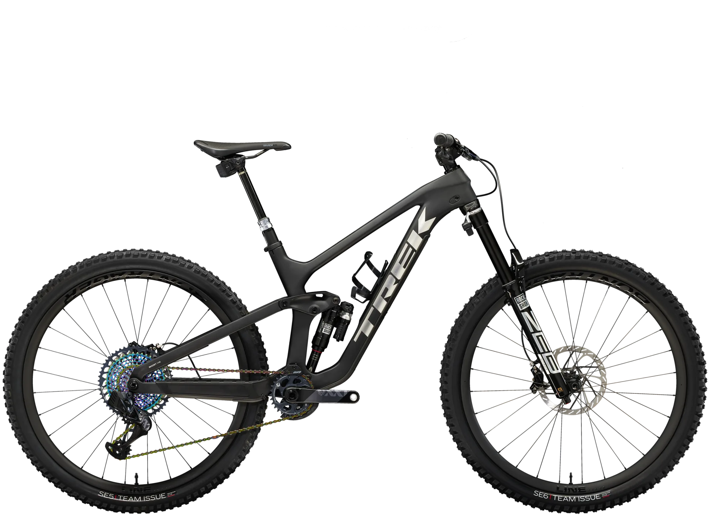

La bicicleta TREK Slash 9.9 XX1 Flight Attendant Gen 5 es una máquina diseñada para el enduro, equipada con los mejores componentes y lista para arrasar en los circuitos más desafiantes:
- Cuadro de Carbono Ultraligero:
El cuadro íntegro de carbono OCLV Mountain ofrece un recorrido de 160 mm y cuenta con un amortiguador RockShox Super Deluxe Ultimate. - Horquilla Robusta:
La horquilla RockShox ZEB Ultimate tiene barras ultra resistentes de 38 mm y tecnología Flight Attendant autoajustable con 110 mm de recorrido. - Transmisión Inalámbrica SRAM:
La transmisión SRAM XX1 Eagle de 12 velocidades es completamente inalámbrica, lo que garantiza ligereza y precisión. - Manillar/Potencia Integrado:
El sistema Bontrager RSL de carbono OCLV es ultra ligero y cómodo, con un diseño excepcional. - Ruedas de Carbono:
Las ruedas Bontrager Line Pro 30 con buje Rapid Drive de 108 dientes ofrecen una aceleración instantánea cuando más lo necesitas.